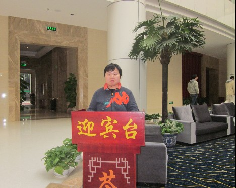
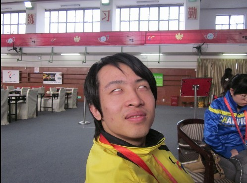
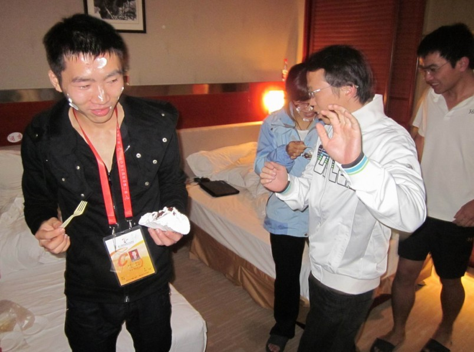

智运会期间的几张经典照片
#1 智运会期间的几张经典照片作者：【掌棋】夏天 发表时间：2011-11-20 12:12:29
［ 黄药师 于 2011-11-20 12:13:41 时花20金币送鲜花一朵］
［此帖子已被 【掌棋】夏天 在 2011-11-20 12:14:17 编辑过］
［此帖子已被 【掌棋】夏天 在 2011-11-20 12:19:11 编辑过］
［ 被感动的人 于 2011-11-20 12:39:28 时花20金币送鲜花一朵］
［ 掌棋如烟 于 2011-11-20 15:26:29 时花20金币送鲜花一朵］
［ 掌棋如烟 于 2011-11-20 15:26:30 时花20金币送鲜花一朵］
［ 虎哥 于 2011-11-23 13:00:35 时花20金币送鲜花一朵］
#2 Re:智运会期间的几张经典照片作者：黄药师 发表时间：2011-11-20 12:13:55
 牛，实在是牛
牛，实在是牛［此帖子已被 黄药师 在 2011-11-20 12:14:14 编辑过］
#3 Re:智运会期间的几张经典照片作者：华夏使者 发表时间：2011-11-20 12:15:53
牛牛和这宾馆有什么仇？这么一本正经的样子，这酒店要黄。#4 Re:智运会期间的几张经典照片作者：【掌棋】夏天 发表时间：2011-11-20 12:22:32
我承认我有罪，是我把牛牛拐到这迎宾台前拍的！他真的不知情~~
所以为了将功赎罪，我又帮他张落了和N多MM一起合影的机会，也算是对得起他了！
牵涉到MM们的玉照，就不外传了，想看的找牛牛要！
［ 奇林 于 2011-11-20 12:44:29 时花20金币送鲜花一朵］
#5 Re:智运会期间的几张经典照片作者：乐0909 发表时间：2011-11-20 12:43:05
很有纪念意义
#6 Re:智运会期间的几张经典照片作者：深海鱼 发表时间：2011-11-20 13:02:08
= =表示惊叹。。。#7 Re:智运会期间的几张经典照片作者：第五象限 发表时间：2011-11-20 13:54:38
迎宾台也太小啦
#8 Re:智运会期间的几张经典照片作者：裁决殿雪月 发表时间：2011-11-20 22:20:22
牛牛表示压力很大……#9 Re:智运会期间的几张经典照片作者：猪小姐 发表时间：2011-11-20 23:43:31
哈哈太可爱了~~~~~#10 Re:智运会期间的几张经典照片作者：水晶水水 发表时间：2011-11-21 12:10:50
牛牛这次战绩如何呀？#11 Re:智运会期间的几张经典照片作者：天逸乄西西 发表时间：2011-11-23 18:51:03
战乱那白眼翻的。。。。。好有型。。。。#12 Re:智运会期间的几张经典照片作者：小妖~ 发表时间：2011-11-25 22:25:48
嗯嗯，白眼的厉害，一般人做不到呢#13 Re:智运会期间的几张经典照片作者：傀儡 发表时间：2011-11-25 22:39:05
原来是战乱大师啊